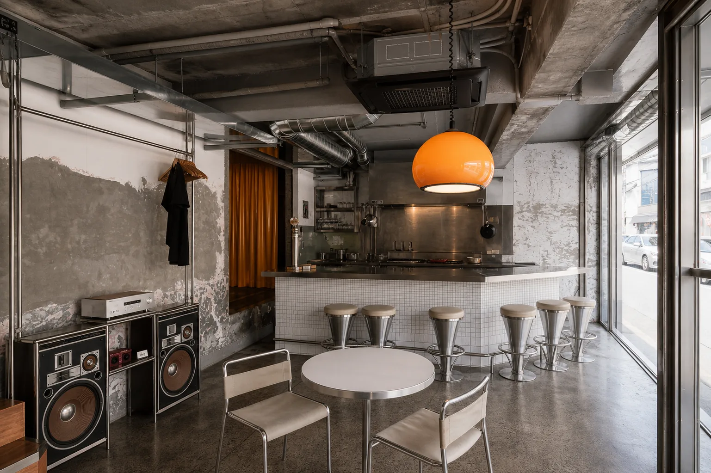
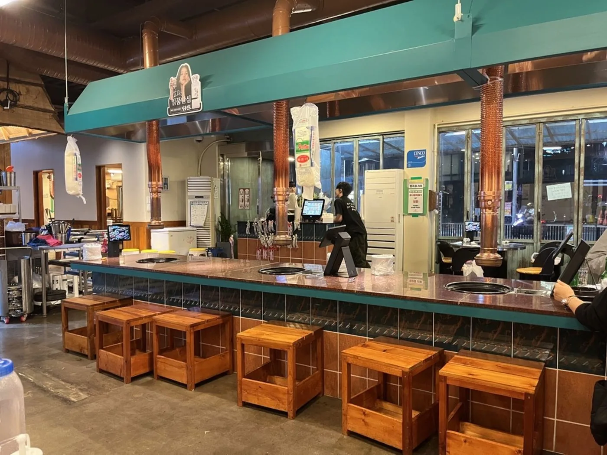
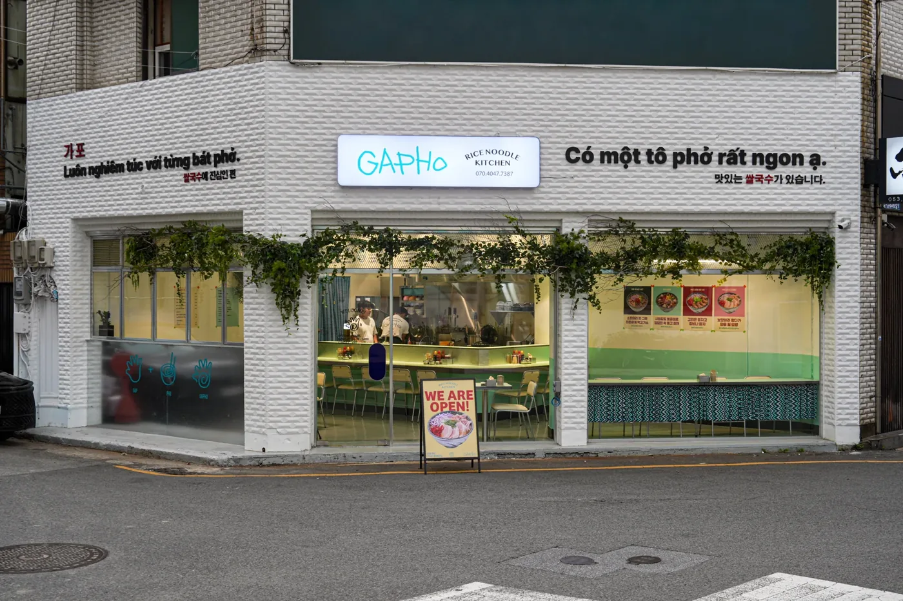

위코컴퍼니는 어떤 인테리어 업무를 하나요?
위코컴퍼니는 대구 중구의 기획 회사입니다. 상가·식당의 브랜드 방향과 공간 배치, 디자인, 프로젝트 진행을 함께 정리합니다. 아파트·주택도 공간기획·디자인을 상담하며, 현장별 가능한 범위와 시공 담당은 별도로 협의합니다.
- 기반 지역
- 대구광역시 중구 삼덕동3가 319-4
- 상담하는 공간
- 상가·식당·고기집·카페·미용실·사무실, 아파트·주택
- 함께 정리하는 업무
- 사업·브랜드 방향, 공간기획·디자인, 프로젝트 디렉팅
- 공사 계약
- 전문 시공이 필요한 공사는 요건을 갖춘 파트너사가 별도 계약으로 수행할 수 있습니다.
대구 상업공간, 실제 매장의 장면부터 봅니다.
레스토랑 가식에서는 공개된 수행 역할을, 우복금 본점과 가포 범어본점에서는 공식 포트폴리오의 실제 매장 사진을 확인할 수 있습니다.
레스토랑 가식 · 대구

- 지역·업종
- 대구 삼덕·더현대·범어 프로젝트로 소개하는 레스토랑 브랜드
- 공개 수행 범위
- 브랜드 기획·디자인·공간·광고
브랜드가 알려지는 장면과 실제 매장 경험을 함께 다룬 프로젝트입니다. 지점별 공사 항목과 공사비를 일괄 제시하는 사례는 아니며, 새 프로젝트는 필요한 결과물과 담당 업무부터 협의합니다.
고기집의 테이블 서비스와 식당의 오픈주방은 필요한 공간이 다릅니다. 아래 사진에서는 입구, 좌석과 주방의 관계를 살펴보세요.
우복금 본점 · 고기집

사진에서 확인할 수 있는 것은 좌석 형태와 배기 설비, 재료의 조합입니다. 새 고기집을 계획할 때는 이 분위기를 참고하면서 메뉴, 굽는 방식과 직원의 이동 공간에 맞춰 배치를 다시 정합니다.
가포 범어본점 · 대구 수성구

외관의 간판과 실내의 색, 주방을 마주하는 좌석을 함께 볼 수 있습니다. 상담에서는 매장에 들어오는 장면부터 주문·착석·식사까지 이어지는 흐름을 정리합니다.
준비 중인 업종에 맞춰 살펴보세요.
브랜드 기획·공간 디자인과 공사의 수행 범위는 프로젝트마다 협의합니다. 현장 주소와 업종, 바꾸고 싶은 부분을 알려주시면 필요한 업무부터 안내합니다.
대구 인테리어 회사를 찾기 전, 필요한 범위를 구분합니다.
브랜드 전략, 공간기획, 디자인, 공사와 운영 준비는 서로 연결되지만 계약 범위는 다릅니다.
위코컴퍼니는 공간의 목적과 고객 경험을 정리하고, 현장 조건과 예산을 바탕으로 필요한 업무 범위를 구체화합니다. 관계 법령상 전문 시공이 필요한 공사는 요건을 갖춘 파트너사가 별도 계약으로 수행할 수 있습니다.
주소와 평수만으로 견적을 판단하지 않습니다.
기존 마감, 전기·급배수·냉난방·소방과 건물 공사 조건을 확인합니다.
고객과 직원의 행동, 수납, 유지관리와 운영 시간대를 정리합니다.
브랜드가 공간에서 어떤 인상과 경험으로 전달되어야 하는지 정합니다.
공간마다 먼저 확인할 문제가 다릅니다.
대구 고기집 인테리어는 조리·환기와 테이블 서비스, 대구 카페 인테리어는 제조·픽업과 좌석 경험부터 검토합니다. 식당·상가는 업종과 설비, 사무실은 업무 방식, 미용실은 급배수와 좌석 운영을 함께 확인합니다. 아래 지역별 세부 가이드에서 공간 유형에 맞는 준비 기준을 확인할 수 있습니다.
자주 묻는 질문
대구 인테리어 업체를 찾을 때 위코의 어떤 사례를 보면 되나요?
레스토랑 가식의 상세 페이지에서 위코가 공개한 기획·디자인·공간·광고 역할을 확인할 수 있습니다. 이 페이지에는 우복금 본점과 가포 범어본점의 실제 매장 사진도 소개합니다. 프로젝트별 참여 범위와 새 현장의 계약 범위는 각각 확인합니다.
아파트·주택 인테리어도 상담하나요?
가능합니다. 아파트·주택의 공간기획·디자인도 상담합니다. 현장 조건과 필요한 범위를 먼저 확인하며, 실제 시공 담당과 계약 범위는 별도로 협의합니다.
대구 외 지역도 프로젝트가 가능한가요?
프로젝트 조건과 업무 범위에 따라 대구·경북을 포함한 다른 지역도 협의할 수 있습니다.
인테리어만 문의해도 되나요?
가능합니다. 다만 공간의 목적과 사용 방식이 정리되어야 디자인과 공사의 우선순위를 정확히 판단할 수 있습니다.
상담 전에 무엇을 준비해야 하나요?
현장 주소, 업종 또는 공간 용도, 전용면적, 예상 일정, 필요한 범위와 참고 자료를 준비하면 검토가 빨라집니다.